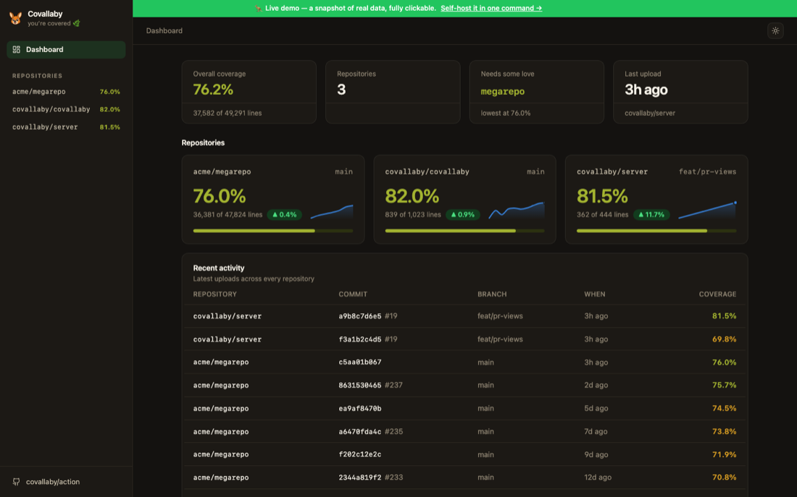

A GitHub-first coverage tool. One workflow step, and every pull request answers the only question that matters — can I merge this?
- uses: covallaby/action@v0.1.1 with: files: coverage/lcov.info min-patch: 85
One sticky comment, updated in place — never spam. Plus named checks, diff annotations, and a CI gate.
| Project coverage | 91.4% |
| Patch coverage | 96.8% |
| Required | patch 85.0% |
The number that answers can I merge this: coverage of the lines this PR changed. Comments and blank lines never drag it down.
“Patch coverage is 72.0%, but 85.0% is required — start with src/payment.ts:44-45.” Never just “coverage failed.”
covallaby/patch and covallaby/project as requirable status checks, a rich Checks-tab entry, and warnings right on the untested lines in the diff.
It runs in your workflow with the token GitHub already gives it. Nothing to sign up for, nothing to leak, no dashboard you didn't ask for.
Your test runner already writes a coverage file. Point Covallaby at it.
# 1. run your tests with coverage (any runner, any language) - run: npm test -- --coverage # 2. one step — sticky comment, checks, annotations, gate - uses: covallaby/action@v0.1.1 with: files: coverage/lcov.info min-patch: 85
Formats are auto-detected from content — no language-specific config.
Reads LCOV · JaCoCo · Cobertura · xccov, all normalized into one model.
It does nearly everything, standalone. These come along for free.
Everything the Action does, on your machine — with a beautiful static HTML report.
LCOV, JaCoCo, Cobertura, and xccov — auto-detected from content and normalized into one model, so the whole product speaks every stack.
The Action covers your pull requests without a server. When you want history, a dashboard, and a badge URL — one tiny process gives you the rest. Try it right now, no install:

▶ Open the live demo